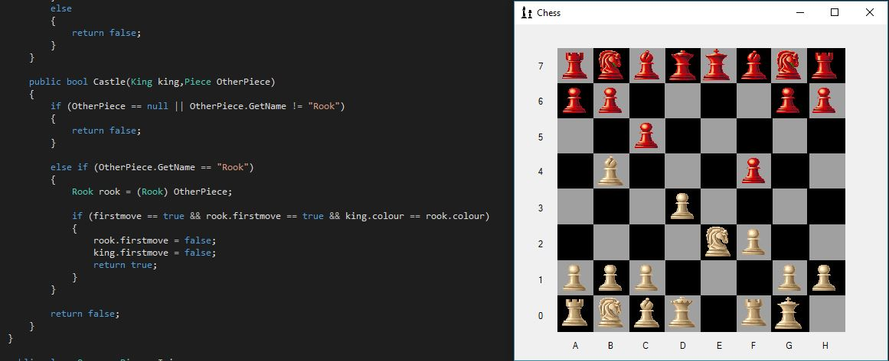

Critical Thinking and Problem Solving
Problem solving and critical thinking are key skills in computer science, espically in programming
were they are essential. My previous programming projects highlight this, in particualr my 2-player
chess game coded in C#. I encountered many issues while building it, for example how to implement
the move 'castling' into the game. By thinking through the problem and breacking it down into smaller
bits I managed to succesfully implement the feature.

Learning and Research Skills
Throughout my current course and in my previous education I have developed 'learning and Research'
skills to help myself understand the course material. But ontop of this I self-taught myself to
program before enrolling on my current course. This has given me a solid understanding
when it comes to learning skills as I had to sourse my own material to learn from. Since I am only in
my first year of university I havent done much in the way of proper research but its something I'm looking
forward to doing later in the course.
Communication,Teamwork and Leadership skills
My skills in 'Communication,Teamwork and Leadership' are good but could do with some improvement espically
Leadership skills simply becuase I havent had many opportunities to practice them. I hope to improve this
and plan to do it though the group project in the information systems unit of my current course, as well
as attending 'hackathons' run by the University's Computer Science society.